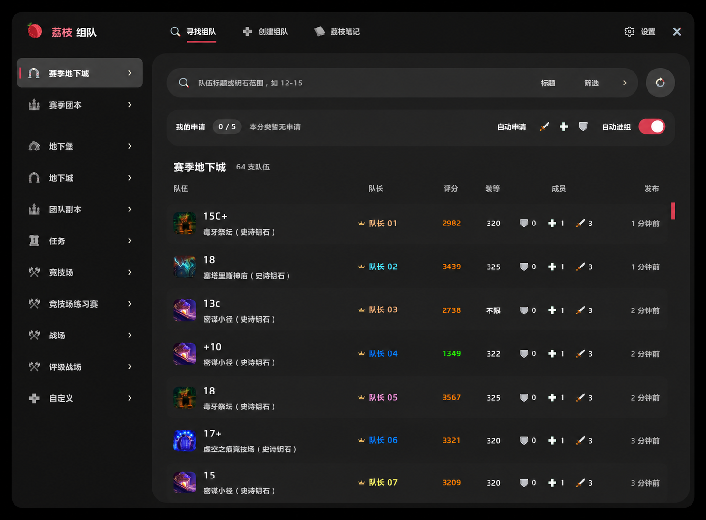
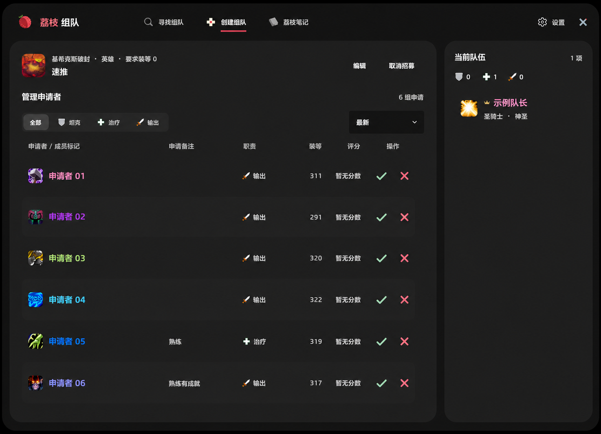
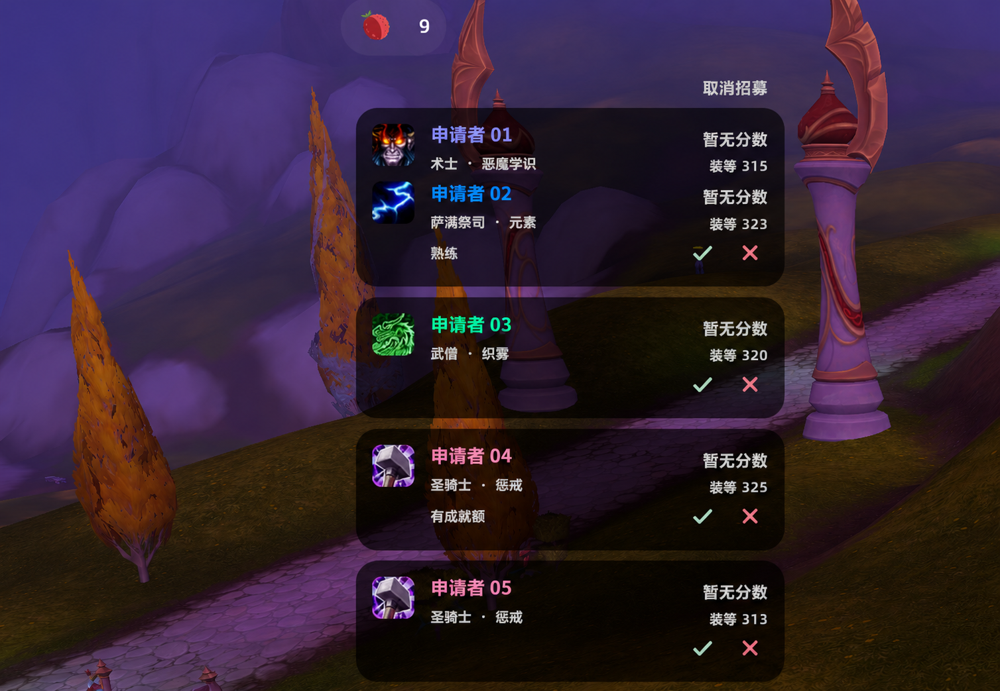
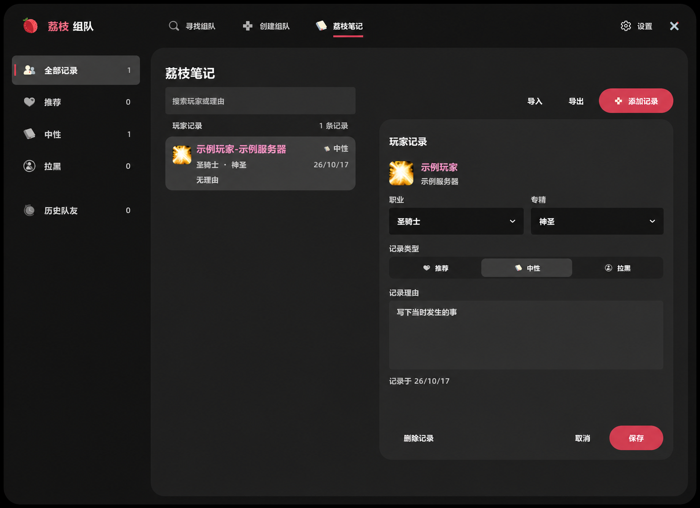

<meta charset="utf-8">
<meta name="viewport" content="width=device-width, initial-scale=1">
<article lang="zh-CN" style="max-width:960px;margin:32px auto;padding:0 20px;color:#252525;font-family:'Microsoft YaHei','PingFang SC',sans-serif;font-size:16px;line-height:1.8;">
<h1>荔枝组队 · Lychee LFG</h1>
<p><strong>集合石优替 · 极致性能优化 · 真正注重用户体验的组队工具</strong></p>
<h2 style="margin-top:1.8em;font-size:24px;line-height:1.4;">性能对比</h2>
<table border="1" cellpadding="10" cellspacing="0" style="border-collapse:collapse;width:100%;border-color:#d8d8d8;text-align:left;">
<thead><tr style="background:#f5f5f5;"><th scope="col">指标</th><th scope="col">荔枝组队</th><th scope="col">集合石</th></tr></thead>
<tbody>
<tr><th scope="row">CPU 时间（ms）</th><td>162.78</td><td>762.68</td></tr>
<tr><th scope="row">峰值内存（MB）</th><td>15.25</td><td>141.27</td></tr>
</tbody>
</table>
<p style="color:#6a6a6a;font-size:14px;">2026-10-18 实测：Ryzen 7 9800X3D，正式服 12.1.5.70391；荔枝组队 1.0.0、集合石 12.2.4。同一角色浏览英雄烈毒之渊，预热后各测 60 秒，执行 6 次刷新、120 次滚动，前后台帧率上限均为 60 FPS。</p>
<p style="color:#6a6a6a;font-size:14px;">CPU 为开启脚本计量后的区间累计时间；内存每秒采样，保留自然回收，荔枝组队合计四个包及内置共享库。两款插件同时安装、分别打开目标窗口，均按游戏原生插件计数统计。线上返回 46–48 支队伍，具体数量及各插件的展示规则有差异；结果仅代表本次场景，峰值为采样最高值，不是游戏总内存。</p>
<p>从找队到进组，让每一步都顺手。荔枝组队把寻求组队、招募管理和玩家笔记放进同一套界面，围绕日常组队的习惯安排信息与操作：看清队伍、快速申请、随时掌握进度，也记住值得再次同行的人。</p>
<h2 style="margin-top:1.8em;font-size:24px;line-height:1.4;">耐看的荔枝界面，把好看做进细节</h2>
<p>中性深灰搭配荔枝红，圆角、图标与留白保持一致。队伍列表有清楚的层次，职业颜色和职责图标保留熟悉的游戏语义；评分、装等、阵容与申请状态各有位置，扫一眼就能找到需要的信息。</p>
<p>从导航选中、按钮悬停，到窗口开合与小荔枝的动作，界面会给操作及时反馈。主窗口适合集中浏览，半透明浮窗方便随手处理申请，长时间组队也能保持清爽。</p>
<h2 style="margin-top:1.8em;font-size:24px;line-height:1.4;">为极致交互体验，打磨每一步动线</h2>
<p>常用操作放在正在看的信息旁边，下一步顺着当前任务继续。少切一次页面，少填一遍内容，让注意力留在选队伍和找队友上。</p>
<h3 style="margin-top:1.6em;font-size:19px;line-height:1.5;">找队 → 看详情 → 申请</h3>
<p>按活动、难度、队伍标题或队长找队，也能直接输入钥石范围，例如 12-15。列表展示评分、装等和职责构成，悬停查看成员详情与团本进度。首次申请确认职责和备注后，本次登录内双击队伍或按 Enter 即可沿用配置；临时想改备注，右键选择“编辑后申请…”就能调整。</p>
<figure style="margin:24px 0 32px;"><figcaption style="margin-top:8px;color:#6a6a6a;font-size:14px;">寻求组队：队伍信息、筛选与申请进度集中展示。</figcaption></figure>
<h3 style="margin-top:1.6em;font-size:19px;line-height:1.5;">申请 → 等待 → 进组</h3>
<p>已提交的申请置顶显示，等待状态和剩余时间随时可见。继续搜索、切换分类或关闭窗口，都保留已有申请；浮窗还能汇总不同分类的等待进度。需要时开启“自动进组”，自动接受已申请队伍的邀请。</p>
<p>申请满额时，就近取消旧申请，等名额释放后继续刚才选中的队伍。常用分类筛选可以记住，操作失败时保留输入，减少来回寻找和重复填写。</p>
<h3 style="margin-top:1.6em;font-size:19px;line-height:1.5;">开队 → 看人 → 邀请</h3>
<p>搜索活动名称即可选择副本，填写招募内容后发布。申请者与当前阵容同屏展示，职业、专精、评分、装等和备注直接可查，方便判断还缺什么位置。结伴申请的玩家按同行分组，一次邀请或拒绝整组；招募期间也能继续修改信息。</p>
<figure style="margin:24px 0 32px;"><figcaption style="margin-top:8px;color:#6a6a6a;font-size:14px;">创建组队：申请者与当前队伍同屏，同行申请整组处理。</figcaption></figure>
<h2 style="margin-top:1.8em;font-size:24px;line-height:1.4;">收起窗口，组队继续</h2>
<p>不必一直开着主窗口。小荔枝浮窗显示当前申请数量，悬停展开详情：找队时查看等待进度、取消单个或全部申请；招募时直接邀请或拒绝申请者。需要回到主窗口，点击条目即可进入对应页面。</p>
<p>有待处理申请者时，荔枝会动起来提醒，处理完后自动停止。浮窗支持拖动、锁定和缩放，可以放在顺手的位置；收起列表、关闭主窗都不打断组队。</p>
<figure style="margin:24px 0 32px;"><figcaption style="margin-top:8px;color:#6a6a6a;font-size:14px;">荔枝浮窗：保留游戏视野，直接处理同行申请与单人申请。</figcaption></figure>
<h2 style="margin-top:1.8em;font-size:24px;line-height:1.4;">记住队友，也记住当时的经历</h2>
<p>遇到配合默契的队友，留下“推荐”；需要留意的人，可以记为“中性”或“拉黑”，写下具体原因。下次在队伍、申请或邀请中遇见时，查看自己的记录再做决定。笔记用于本地提醒，邀请与组队仍由你决定。</p>
<p>大秘境历史保存副本、层数、时间和队友，打完后也能找回那一队人，再补上记录。支持笔记导入导出，也能接续已有的 LycheeNote 记录。</p>
<figure style="margin:24px 0 32px;"><figcaption style="margin-top:8px;color:#6a6a6a;font-size:14px;">荔枝笔记：记录玩家与原因，结合历史找回曾经的队友。</figcaption></figure>
<h2 style="margin-top:1.8em;font-size:24px;line-height:1.4;">安装即用</h2>
<p>支持正式服大秘境、团本、地下堡与 PvP，提供中文和英文界面。寻队、招募和笔记功能随插件一起提供，无需额外安装集合石或笔记插件。启用后输入 /lg 打开。</p>
<p style="color:#6a6a6a;font-size:14px;">配图基于实机截图进行脱敏处理，玩家名与服务器信息已替换或移除。</p>
</article>
